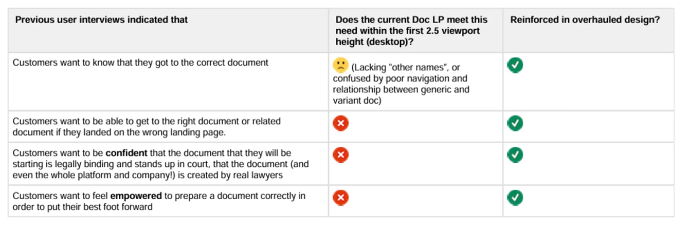
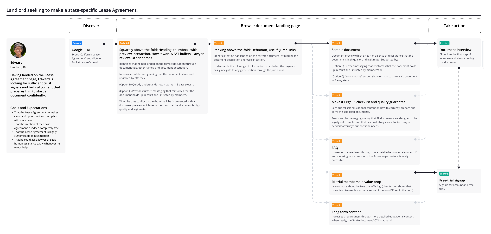

Rocket Lawyer was underperforming competitors in organic search rankings for key document terms. Our goal was to regain our top spot in organic search by shifting the organic strategy.
GCR is the share of visitors who complete the document creation flow and start a trial, and it accounted for roughly 75% of recurring revenue. We used it as a guardrail to ensure SEO changes did not hurt conversion and, ideally, improved both.

The primary goal was to increase organic traffic to our document landing pages. (Image here showing old design).
Our strategy was to make the primary and secondary goals complementary, not competing:
Add longer, more detailed content with “deep and specific” information and E‑A‑T signals that serve both visitors and search engines.
Enhance internal linking so search engines can discover and crawl more pages, improving site authority and ranking potential.
Improve page design to boost click‑through and reduce bounce rate, since the placement of text and links signals importance to search engines.

We needed to add in signals that speak to expertise, authoritativeness and trust — for both humans and the search engine.
These landing pages are hosted on Rocket Lawyer’s CMS, and each section of the template requires its own logic configuration. For a deeper look at how we designed and implemented this template‑level system, read my case study on the CMS design system.
I started by analyzing UX data from existing document landing pages in FullStory. Key findings:
Static document thumbnails in the hero consistently received rage clicks.
Average scroll depth was about 30% across all devices.
Surprisingly, visitors who scrolled deeper were more likely to drop off earlier in the document creation flow.

Discovery on Fullstory helped us map out an initial design strategy
This suggested that from a design point of view, we should:
Place the most relevant, persuasive elements above the fold, avoid wasting precious real estate.
Design interactive elements that feel natural to users. Clickable elements should provide clear feedback, and links or buttons should never take users to unexpected destinations.
Optimize the first 30% for human readability; optimize everything below for search engine crawl-ability.

We ran a usertesting on: 2 competitors, RL's existing page, and an old unshipped design (which we admired) by a previous RL designer.
In this usability test, we showed participants four designs: two from competitors (A and B), our existing landing page (C), and a previously rolled-back redesign by a former team member (D). Participants didn't know which company we represented until the end.
We discovered:
Our existing design performed as well as competitors' in conveying trust signals and preparing users to start a document—mostly because we showed more trust elements, despite having a less polished design.
The previous Rocket Lawyer redesign had many promising elements, but participants noted that valuable decision-making information was buried under too much long-form content.
Participants consistently looked for the same things, which allowed us to craft a more specific persona for the project.

Design requirements checklist to make sure improvements are delivered in final deisgn
Based on our existing data and this research, we further refined our experimentation hypothesis:
we provide relevant content that answers customers’ top‑of‑mind questions and surface stronger trust signals on document pages in an efficient, easy‑to‑scan layout,
customers will feel more comfortable, empowered, and prepared to start a document, and search engines will rank us higher.
We will know it is true when: visits rise, GCR is flat or better, and bounce rate falls.

User journey diagram, standard protocol at RL to include for design approvals

Various sketches throughout the design process from different members of the team
Over the course of a few months, we tested the impact of individual trust elements in minor A/B tests. These included:
In particular, the document preview had one of the greatest successes. This is because it solved a critical problem of thumbnail rage clicking, prepared the user to take action, and made sure only high intent users entered the document creation flow.
Implementing Document Preview on the thumbnail prevented rage clicks and boosted click-through
Meanwhile, I was assigned to work on an internal tool for our legal content writers to edit these documents. During this process, I discovered that we had a step-by-step guide in our database to help users ensure their documents were ready and legally binding. For some reason, it was buried deep in the user journey. Customers weren't aware they existed until after they had completed their document.
Our research showed this guide was incredibly valuable for increasing users’ motivation and confidence to start a document at the beginning. After discussion, the product team agreed to feature it prominently on the landing page.

The Make-It-Legal Checklist was added to the final design
As design iterations continued, we ran multiple usability tests on variations—first focusing on above-the-fold content for desktop and mobile web, then moving to full-page designs.
To build team confidence in design decisions, I applied quantitative methods to user testing findings—making insights more objective—and connected UX metrics to product metrics. In Rocket Lawyer's data-driven culture, this approach helped the team feel comfortable moving forward with the final design.
To help the team benefit from these findings, I hosted a watch party where product managers, developers, and content writers could review session recordings together. Many found it fascinating and helpful—especially since they rarely get to see how users interact with their work or respond to their content.

Analyzing user testing results
The most impactful changes are in the above-the-fold space. Here are the problems with the old landing page and the critical design changes we made to encourage users to move forward:

H1: Lack of styling differentiation caused misreading of the document title in some instances (e.g., "... Free Photography Contract")
Thumbnail: Attracted rage and dead clicks
Hero description: Too long and hard to scan. "Read more" didn't expand the text—it took users to a different page, which was disorienting
Jump links: Too short to be useful, and placing them above the breadcrumbs felt out of order
"How it works": Took up too much real estate with generic copy that didn't add value

H1: Improved typesetting hierarchy to clarify the document title
Thumbnail: Opens a document preview modal when tapped, demonstrating value and guiding visitors toward conversion
"Other names”: Explicitly displaying alternative names for the document helps users confirm they're on the right page, with a long-form explanation of the document closely following, peeking above the fold.
Breadcrumbs: Placed in the expected location to help users locate themselves and navigate the site
“How it works” equivalent: Modified section to provide conditional and specific instructions guide users, and emphasize document legitimacy. Shrunk in size to be economical with space.
Jump links: Added so users know what to expect on the page and search engines can crawl the content more effectively
I left Rocket Lawyer shortly before the final design was fully deployed, so I don't have access to the final experiment data. However, the new template launched successfully and remained in production for over 12 months—indicating it met or exceeded our goals of improving SERP rankings, increased visits (goal: +30%), and GCR. A quick Google search confirms that high-traffic document pages like "NDA" now rank at the top above competitors.
Three years later, many of the design elements I created remain—even through subsequent iterations.
Rocket Lawyer's legal document landing pages were failing and needed a major overhaul that incremental A/B tests couldn't fix. We rebuilt the template around clearer value, deeper content, and a smoother decision path.
The key lesson: know when to stop iterating and rebuild the foundation. When analytics, competitive testing, and user research all point to structural issues, a well-researched overhaul can be faster and more effective than years of micro-experiments.
For me, the biggest win wasn’t just the new template—it was proving that research could get us to better answers faster. By combining insights from user testing, product analytics, and A/B tests, we made higher‑confidence decisions and moved faster with less waste. I’ve since applied this approach to other projects: pairing qualitative and behavioral data to drive impact, while steadily building awareness of research’s value across teams.


Made in Figma + Webflow by Lai Jing Chu, 2025.
Take a peek at the website style guide.